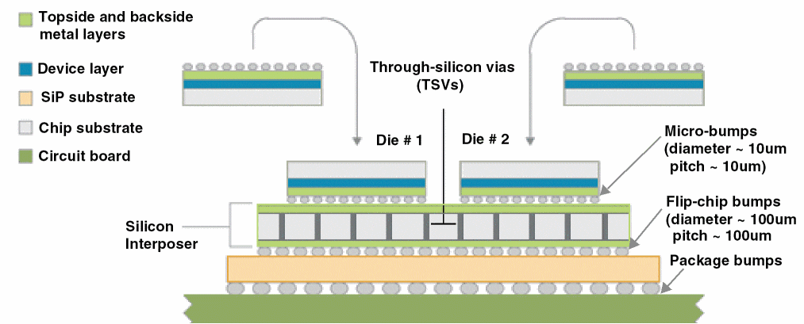

Components of a Stacked Module
The following diagram depicts a stacked module.

The key components of a stacked module are:
-
Die
A die is an unpackaged chip. -
Die Pad
A die pad is a metal contact on a die that is used to make electrical connections between the die and the component. It is also called an IO pad or a die pin. On flip-chip dies, it is called a solder bump, whereas for wire-bound ICs it might be called bondwire pads. -
Die Stack
A die stack is a vertical stack of one or more dies, spacers, and interposers. -
Through-Silicon Via (TSV)
TSVs are copper vias with diameters ranging between 1 and 30 microns that pass through a silicon substrate. The top cap layer of a TSV is the first normal routing layer, Metal1, and the bottom cap layer is the backside metal layer. Therefore, TSVs enable signal propagation and power delivery between the top metal layer and the backside metal layer.
-
Bump
A bump includes a solder ball that is placed on the top metal layer or backside metal layer of a die and the metal pad beneath it. Aligned bumps between dies are called micro-bumps or landing pads.
Cross-die signals and power travel to adjacent dies through micro-bumps. Bumps between a die and the package substrate are called flip-chip bumps. -
Silicon Interposer
A silicon interposer is an electrical routing channel that helps establish much finer die-to-die interconnections, thereby increasing the performance and reducing the power consumption. Silicon interposers are dies that can include TSVs to provide connections from the upper metal layers to additional backside metal layers.
Related Topics
Return to top